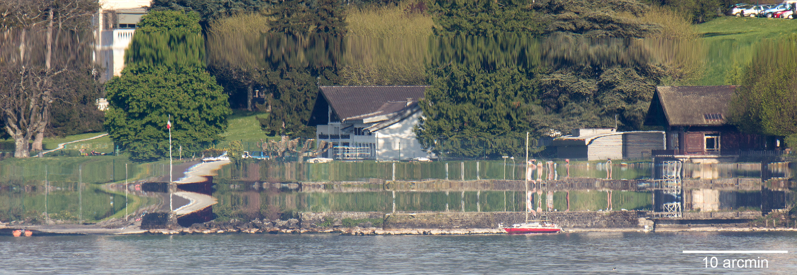

附录¶
2020年竞赛题目与试析¶
中文翻译和注解仅供参考。翻译的原则是：在中英文的分句能一一对应的前提下，标题尽量还原词汇的背景含义和艺术性（而可能与题目内容关系并不密切），现象描述部分尽量亲切地表述原文最可能要指代的现象（而可能导致含义变得狭窄），任务指定部分尽量保持原意（而不限定任何题意理解和研究的方向）。
关键词 是我很不愿意写的栏目，因为这样写总是过于片面，但让新手接触一些相关的名词是有意义的。
从这里开始 是“亲民”的栏目，从中可以获取对问题的第一印象。
高手示范 栏目的参考文献都有很大的价值。有些你不得不参考（如第九题），有些你最好参考一下（如第八题），有些你参考不了（如第七题）。
特别提醒 栏目是我对网络上已有的参考文献列表的补充，我认为其背后可能有有价值的问题，有余力者可以考虑。
路线 是我提供的一条思路。我指出的研究领域和方向很可能不正确或是不准确，且仅建议在完全不知所措时参考，否则会错过锤炼信息搜寻能力、积累见闻的机会。即便我说的是对的，也应当尽量不照搬，因为寻找自己认为有价值的问题去研究也是研究重要的一环。而对于很多物理背景浓厚的问题，能够重复前人的成果就已经算是足够出色了，所以不需要路线上的额外建议，研究者只需跟随已有的论文即可。
白嫖更多资料，可以访问：http://stemfellowship.org/iypt-2020-references-2/。
1. 自己发明 Invent Yourself¶
Design an instrument for measuring current using its heating effect.
设计一个通过电流热效应来测量电流的装置。
What are the accuracy, precision and limits of the method?
这种方法的准确性、精密性、局限性 [1] 如何？
- 关键词
- 电流传感器（仪器科学、电路学）
- （固体的）焦耳效应（固体电子学）
- 发热功率的统计（热学）
- 路线
- 电路与电热器件设计：根据电路中信号的类型，在尽量增大发热量的同时尽量降低发热对电路中信号的影响。
- 热功率测量：响应快（时间分辨率高）、低系统误差、易定标的热传感器。
- 分析你所采用的这类设计各方面的理论极限。
2. 低调的瓶子 Inconspicuous Bottle¶
Put a lit candle behind a bottle. If you blow on the bottle from the opposite side, the candle may go out, as if the bottle was not there at all.
在瓶子后方放一个点燃的蜡烛，在瓶子的前方对瓶子吹气可能会导致蜡烛熄灭，如同瓶子根本不在那儿一样。
Explain the phenomenon.
解释这个现象。
- 关键词
- 一定边界条件下的圆柱体绕流问题（流体力学）
- 从这里开始
- 宽德效应 Coandă Effect
- 蜡烛是如何被吹灭的？
- 高手示范
- M Trancossi, A Dumas, D Vucinic. Mathematical Modeling of Coanda Effect. SAE Technical Papers, 2013, 10.4271/2013-01-2195.
- 路线
- 进行对不同瓶子的不同气流流速、口径、距离、角度的定常流场分析，并借此预测吹灭蜡烛的难易程度。
- 瞬态模型
3. 摇摆声管 Swinging Sound Tube¶
A Sound Tube is a toy, consisting of a corrugated plastic tube, that you can spin around to produce sounds.
声管是一种由一根塑料波纹管构成的玩具，旋转 [2] 它就能产生声音。
Study the characteristics of the sounds produced by such toys, and how they are affected by the relevant parameters.
研究这样的玩具所发出的声音的特性，以及这些特性是如何被相关参量所影响的。
- 关键词
- 声驻波（声学）
- 惯性力引起的弯曲（连续体力学）
- 惯性力引起的气流（流体力学）
- 从这里开始
- Whirly Tube
- Amorim M E , Sousa T D , Carvalho P S , et al. A Simple Experiment to Explore Standing Waves in a Flexible Corrugated Sound Tube[J]. Physics Teacher, 2011, 49(6):360.
- 路线
- 旋转中的波纹管形状
- 旋转中的波纹管中的气体流动
- 波纹管中的声音
4. 唱歌的铁芯 [3] Singing Ferrite¶
Insert a ferrite rod into a coil fed from a signal generator. At some frequencies, the rod begins to produce a sound.
在由信号发生器馈电的线圈中插入一根铁氧体棒，在某些频率下这根棒会发出声音。
Investigate the phenomenon.
探究这个现象。
- 关键词
- 磁声换能器（仪器科学）
- 磁致伸缩效应（固体物理学）
- 从这里开始
- 磁致伸缩效应 Magnetostriction
- Selim Yürekten, Yunus Sert, Miroslav Trnan, Enis Ceylan. The Parameters of Generated Sound Level of Transformer Cores. Procedia Engineering, 2017, 202:273-279.
- 路线
- 换信号：谐振频率下的现象、窄带信号的频率响应特性、宽频带信号下的特性
- 换材料：各向同性/各向异性铁磁介质
5. 甜蜜泡影 Sweet Mirage¶
Fata Morgana is the name given to a particular form of mirage. A similar effect can be produced by shining a laser through a fluid with a refractive index gradient.
摩根勒菲 [4] 是蜃景的一种特殊形式的名称。类似的现象 [5] 可以通过让一束激光通过折射率有梯度的流体来制造。
Investigate the phenomenon.
探究这个现象。
- 关键词
- 折射定律（几何光学）
- 折射率梯度（一点点流体力学、热光效应等）
- 从这里开始
- Young A T , Frappa E . Mirages at Lake Geneva: the Fata Morgana[J]. Applied Optics, 2017, 56(19):G59.
6. 萨克逊碗 Saxon Bowl¶
A bowl with a hole in its base will sink when placed in water. The Saxons used this device for timing purposes.
一个底部有洞的碗在水中会下沉，萨克逊人曾使用这装置计时。
Investigate the parameters that determine the time of sinking.
探究决定下沉时间的参量。
- 关键词
- 浮力、泊肃叶流动（流体力学）
- 动力学方程的逆函数（力学）
- 从这里开始
- 任何一个实验视频
- StackExchange Physics: What physics equation can be used to describe the saxon bowl experiment?
- Ilinblog: Saxon Bowl IYPT 2020 - analytical solution
- Greer A , Kincanon E . An experiment with Saxon bowls[J]. Physics Teacher, 2000, 38(2):112-112.
- 路线
- 通过流体力学确定小孔流量的表达式
- 受力分析给出动力学方程，并将时间看作位置的函数积分
7. 绳上球 Balls on a String¶
Put a string through a ball with a hole in it such that the ball can move freely along the string. Attach another ball to one end of the string. When you move the free end periodically, you can observe complex movements of the two balls.
在绳上串一个能自由移动的球，再固定一个球在绳的末端。当你周期性地移动另一末端，就能观察到两个球的复杂运动。
Investigate the phenomenon.
探究这个现象。

- 关键词/从这里开始
- Astrojax
- 参数振动（理论力学）
- 驱动支点的摆问题（非线性动力学）
- 双摆问题（非线性动力学）
- 高手示范
- Philip Du Toit. The Astrojax Pendulum and the N-Body Problem on the Sphere: A study in reduction, variational integration, and pattern evocation. Student Projects in Caltech: Marsden Research Projects, 2005.
- 路线
- 建立数值计算用的模型，进行大量的现象观察和现象分类（实验和数值计算）
- 从理论上定性解释每类常见现象的机制和特征
- 选择几类能导致稳定运动模式的驱动方式，分析两球的运动和驱动的关系
8. 皂膜筛子 Soap Membrane Filter¶
A heavy particle may fall through a horizontal soap film without rupturing it. However, a light particle may not penetrate the film and may remain on its surface.
下落的重的颗粒可能穿过一个水平肥皂膜而不弄破它，但轻颗粒则可能穿不过去而留在其表面上。
Investigate the properties of such a membrane filter.
探究这样的一个膜状筛子的性质。
- 关键词
- 表面张力、润湿性（介质界面物理）
- 高手示范
- BB Stogin, L Gockowski, H Feldstein, H Claure, J Wang, TS Wong. Free-standing liquid membranes as unusual particle separators[J]. Science Advances, 2018, 4(8):eaat3276.
- 特别提醒
- Zou J , Wang W , Ji C , et al. Droplets passing through a soap film[J]. Physics of Fluids, 2017, 29(6):062110.
9. 磁悬浮 Magnet Levitation¶
Under certain circumstances, the “flea” of a magnetic stirrer can rise up and levitate stably in a viscous fluid during stirring.
在特定条件下，粘性液体中的磁力搅拌子会在搅拌时升起并稳定悬浮。
Investigate the origins of the dynamic stabilization of the “flea” and how it depends on the relevant parameters.
探究搅拌子的动态稳定的起源以及这是如何依赖于相关参量的。
- 关键词
- 粘滞阻力（流体力学）
- 磁场分布（电磁场论）
- 动力学稳定性 [6] （力学）
- 高手示范
- Baldwin, J.-B. de Fouchier, P. Atkinson, et al. Magnetic Levitation Stabilized by Streaming Fluid Flows[J]. Physical Review Letters, 2018, 121(6):064502-.
- 路线
- 位于定点的搅拌子的运动分析
- 流场、磁场分布分析
- 动力学稳定性分析
10. 导电线 Conducting Lines¶
A line drawn with a pencil on paper can be electrically conducting.
用铅笔在纸上画出的一条线是电导性的。
Investigate the characteristics of the conducting line.
探究这根导电的线条的特性。
- 关键词
- 伏安特性（固体电子学）
- 频率响应特性（固体电子学）
- 特别提醒
- Kurra N , Dutta D , Kulkarni G U . Field effect transistors and RC filters from pencil-trace on paper[J]. Physical Chemistry Chemical Physics, 2013, 15(21):8367.
- 路线
- 了解不同铅笔的石墨含量，以及石墨密度对导电性的影响。
- 对不同铅笔测量不同温度下的阻抗特性，并将结果与某些固体电子论的预测比较。
11. 漂移斑点 Drifting Speckles¶
Shine a laser beam onto a dark surface. A granular pattern can be seen inside the spot. When the pattern is observed by a camera or the eye, that is moving slowly, the pattern seems to drift relative to the surface.
向暗表面 [7] 上照一束激光，在光斑内部可以看到颗粒状图案。用人眼或相机观察时，它是缓慢运动着的，看着就像图案在相对表面运动一样。
Explain the phenomenon and investigate how the drift depends on relevant parameters.
解释此现象并探究漂移是如何依赖于相关参量的。
- 关键词
- 漫反射（几何光学、统计光学）
- 干涉（波动光学）
- 高手示范
- Butters J N . Laser Speckle and Related Phenomena[J]. Optica Acta International Journal of Optics, 1976, 23(10):842-843.
12. 多边形旋涡 Polygon Vortex¶
A stationary cylindrical vessel containing a rotating plate near the bottom surface is partially filled with liquid. Under certain conditions, the shape of the liquid surface becomes polygon-like.
一个静止圆柱管的底部是一个转盘，内部空间中有一部分填充着液体。在特定条件下，液体的表面会变得像多边形一样。
Explain this phenomenon and investigate the dependence on the relevant parameters.
解释这个现象并探究其与相关参量的依赖关系。

- 关键词
- 旋转中的液体（流体力学）
- 流体力学对称性破缺（场论）
- 高手示范
- Jansson T R N , Haspang M P , Jensen K H , et al. Polygons on a Rotating Fluid Surface[J]. Physical Review Letters, 2006, 96(17):174502.
- 路线
- 进行实验和数值计算，绘制相图(Phase Diagram)。
- 尝试给出关于液体表面形状的泛函极值形式规律，进而解释对称性破缺、计算“吸引域”。
13. 摩擦振子 Friction Oscillator¶
A massive object is placed onto two identical parallel horizontal cylinders. The two cylinders each rotate with the same angular velocity, but in opposite directions.
一个重物体 [8] 放置在两根水平平行的相同圆柱上，而两根圆柱是以大小相同方向相反的角速度旋转着的。
Investigate how the motion of the object on the cylinders depends on the relevant parameters.
探究圆柱上物体的运动如何依赖于相关参量。

- 关键词
- 滚动摩擦（摩擦学）
- 振动（力学）
- 从这里开始
- Enrique Zeleny. The Friction Oscillator. Wolfram Demonstrations Project, 2013.
- 路线
- 给出支持力与位置的关系
- 确定摩擦模型
- 动力学分析
14. 下落的塔 Falling Tower¶
Identical discs are stacked one on top of another to form a freestanding tower. The bottom disc can be removed by applying a sudden horizontal force such that the rest of the tower will drop down onto the surface and the tower remains standing.
把相同的圆盘摞起来以形成一个自立式的塔 [9] 。底部的圆盘能通过施加一个突然 [10] 的水平力来去除，同时 [11] 保持塔的剩余部分立着坐落在桌面上。
Investigate the phenomenon and determine the conditions that allow the tower to remain standing.
探究此现象并确定使允许塔保持直立的条件。
- 关键词
- 摩擦（摩擦学）、碰撞（弹性力学）、静力学稳定性（静力学）
- 路线
- 在不同的装置参数下进行实验观察，寻找与真实移除过程相符的物理过程模型。
- 假定一类外力的形式，并计算其参数对塔的某些物理量能造成的影响。
- 建立衡量塔直立的难易程度的方式，找出临界条件。
15. 胡椒罐子 Pepper Pot¶
If you take a salt or pepper pot and just shake it, the contents will pour out relatively slowly. However, if an object is rubbed along the bottom of the pot, then the rate of pouring can increase dramatically.
仅通过摇动调料瓶来倒出内容物 [12] 是相对较慢的，如果有一个物体在罐子底部摩擦则能戏剧性地增大倾倒的速率。
Explain this phenomenon and investigate how the rate depends on the relevant parameters.
解释这个现象并探究这个速率如何依赖于相关参量。
- 关键词
- 通过小孔/漏斗的颗粒流问题（颗粒力学、颗粒材料的统计力学）
- 随机信号驱动（随机动力学）
- 高手示范
- Coniglio, A. Fierro, H. J. Herrmann, M. Nicodemi. Unifying Concepts in Granular Media and Glasses: From the Statistical Mechanics of Granular Media to the Theory of Jamming[J]. 2004.
16. 镍钛引擎 Nitinol Engine¶
Place a nitinol wire loop around two pulleys with their axes located at some distance from each other. If one of the pulleys is immersed into hot water, the wire tends to straighten, causing a rotation of the pulleys.
在两个有一定轴距的滑轮上绕一根镍钛丝。如果将其中一个滑轮浸入热水，镍钛丝就会趋向于伸直而使得滑轮转动。
Investigate the properties of such an engine.
探究这样的一个发动机的性质。
- 关键词
- 形状记忆效应（固体物理）
- 发动机性能（一点点机械动力知识）
- 路线
- 寻找/建立相变时的应力等物理量的表达式，用于计算转矩、转速。
- 与实验相对比，计算能量效率、最佳工作温度区间等性能指标。
17. 纸牌 Playing Card¶
A standard playing card can travel a very long distance provided that spin is imparted as it is thrown.
如果使一张标准纸牌 [13] 自转起来，它就能飞越很长一段距离。
Investigate the parameters that affect the distance and the trajectory.
探究影响距离和轨迹的参量。
- 关键词/从这里开始
- 陀螺效应（刚体力学）
- 空气阻力 （空气动力学）
- The Aerodynamics and Stability of Flying Discs
- 路线
- 练绝技（笑）
- 分析飞行过程的角动量方向偏移量、方向偏转造成的压差阻力。
- 分析强阻力下的飞行。
| [1] | limits 一词也可能特指 检出限(detection limit) 等概念，但那样的话不应写复数形式。也可能指装置性能的理论极限，但那样的话不应与 accuracy, precision 并列。此处可以理解为对电路的影响这类的局限性。 |
| [2] | 原文 spin 似乎强调绕质心的自转是现象的关键，但标题 swinging 似乎强调着转动是以管的一端为瞬心的。 |
| [3] | 原文Ferrite应译为铁氧体。硬磁铁氧体用于作为磁铁，而软磁铁氧体用于作为磁珠（铁芯），但它们都是铁磁性的，除矫顽力不同之外无根本不同。考虑铁氧体一词在生活中不常用，故根据题意以“铁芯”这一有代表性的印象代替（但实际铁芯确实是片状硅钢制成的）。 |
| [4] | 在关于亚瑟王的西方神话传说中，摩根勒菲是一名女性巫师的名字，也用于指代她用巫术所创造的空中城堡幻象。 |
| [5] | 看上去， similar 一词相当含糊，仿佛意味着各种各样的蜃景都可以是研究对象。实际上，狭义的 Fata Morgana 仅指某一类复杂蜃景，它相似于一般的上现蜃景，但它在竖直方向上包含多幅图像、或者说一系列图像）。 |
| [6] | 注意这里说的动力学稳定性（Dynamics Stability）与题目中的动态稳定（dynamic stablization）不是同一概念！ |
| [7] | 要求是暗表面可能只是为了保护眼睛和传感器，而并非是物理上的要求。 |
| [8] | 原文 massive object 也可能指一般的有质量的物体，但考虑为较重的物体对本题的研究是有特别意义的。 |
| [9] | 仅限定每层只有一个圆盘，而未限定具体的摆放位置。也就是说，你或许可以造一个斜塔。 |
| [10] | 可能指仅在造成可见位移之前有力的作用，也可能只是指移出底部砖块耗时很短。 |
| [11] | 可能仅指落下的瞬间，故塔的上方被震倒的情况或许可以不作考虑。 |
| [12] | 注意题目原文并未限定内容物是什么， salt or pepper 仅仅是用于对容器的说明。 |
| [13] | 不同规则、不同地域的标准是有些不同的，但这对研究的意义并无影响，因为这个条件的存在只是为了把研究范围限定在可手持的纸牌的范围内。 |
启发性问题¶
以下是一些通用的启发性问题，没有正确答案。要对研究的对象有较深的了解，可以试着对它们进行一定的思考、作出自己的回答。
- 题中所描述的现象是什么？有多种理解方式吗？如果有，哪种现象是你感兴趣的？
- 题目指定的研究任务是否足够明确，以至于能直接告诉你要做什么？如果不能，你打算把它具体化为对什么问题的研究？
- 现象的原理是什么？属于哪个学科的研究范围？已有的研究做到什么程度了？
- 是否能用简单而基本的理论完成一些偏差不很大的预测？如果不能，应当采用什么样的分析方法或者物理模型？
- 你所重现的现象与题目中描述的现象有什么差别？是否完全实现了题中的描述？除此之外你还得到了什么额外的信息？
- 装置中有哪些参量是你能调整的？你能想到的参量之间是独立的吗？它们对现象有没有性质上的或者数量上的影响？
- 装置的各个实体/要素对现象有什么影响？有它什么样、没它什么样、有无替代品？
- 现象发生的条件是什么？什么情况能发生、什么情况不能？
- 系统有无（近似的）守恒量？如果有，它在装置的各部分间是如何“转移”的？
这一部分还需改善，所以也向有经验者征集建议
较有用的软件¶
数学软件：Mathematica（更全能）、Matlab（更快的矩阵运算）
编程语言：Python（更简单的语法）、C++（更高的性能）、Arduino（能迅速上手的单片机编程语言）
仿真模拟：COMSOL（更全能）、Ansys系列（某些模块有更多的优化，如流体和弹性体）、Proteus（电路仿真）
数据处理：Excel（更方便）、Origin（更专业）、Tracker（对视频中的物体进行跟踪）
演示：Powerpoint（更通用）、LaTeX Beamer（更专业）
广告：在这个比赛中，你可以仅学习 Mathematica ，这样的话以上的其他软件都可以免了。当然如果你已经有Matlab等软件的使用经验，或者有特种的需求（如超高性能计算），就另说了。应用于IYPT赛题的案例可参考： 知乎：wjxway - Mathematica 到底有多厉害？
工程制图：Solidworks（主要3D）、AutoCAD（主要2D）